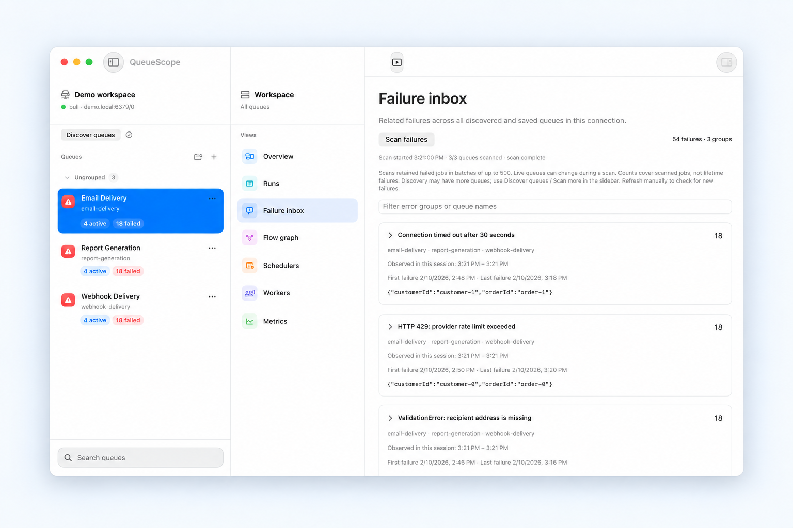
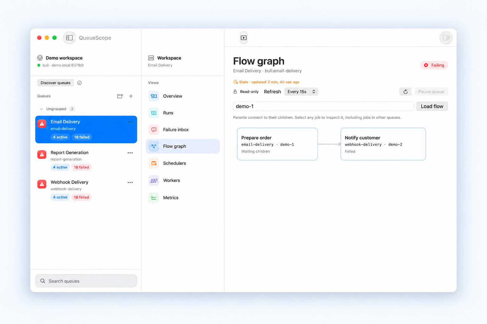

Private Redis.
Within reach.
Connect through SSH with your existing keys or agent. Keep known-host checks and Redis TLS verification intact.
Your BullMQ queues, without another dashboard to deploy. Group related failures, inspect the job behind them, and connect to private Redis—all from your Mac.
Free · macOS 14+ · Apple Silicon & Intel · Signed and notarized
A shorter path to an answer
Explore a three-step walkthrough with light-mode app showcases and offline sample data.

Group related failures across queues, with scan coverage and timestamps for context.

Inspect payloads, attempts, and job options. Manage eligible jobs on writable connections.

Trace parent and child jobs across queues to find the dependency blocking your workflow.
Connect through SSH with your existing keys or agent. Keep known-host checks and Redis TLS verification intact.
Native controls, local connections, and light and dark appearances. No dashboard service to run.
Inspect payloads and state first. Use BullMQ-backed job actions when you're ready.
Ready when your queues aren’t
Download the ZIP, move QueueScope to Applications, and connect. Updates are available from the app menu.
Download QueueScope 0.5.1 ↓macOS 14 or later · BullMQ 5.77.x
brew install --cask raynirola/tap/queuescopeOur own tap. Same signed and notarized app.
View the cask ↗From a symptom to the evidence
Start with the problem in front of you. These guides explain what to inspect and where the dashboard’s view has limits.
Group related errors, inspect payloads and stack traces, and check attempts before retrying.
Trace parent and child jobs to find the dependency keeping a workflow blocked.
Understand retention settings, partial scans, and what a dashboard can show after jobs are removed.
Connect to private Redis through SSH · All articles and guides
Yes. QueueScope is free and open source under the MIT license. The signed Mac app is available from GitHub Releases or our Homebrew tap. No QueueScope account is required.
QueueScope 0.5.1 requires macOS 14 or later and runs on Apple Silicon and Intel Macs. It targets BullMQ 5.77.x Redis layouts. It is not a Windows or Linux app, and compatibility with every BullMQ version is not guaranteed.
No. The packaged app includes its Node runtime and the official BullMQ package for job actions. You connect from the Mac app to Redis. Building QueueScope from source still requires the build dependencies described in the repository.
Release builds store Redis credentials in macOS Keychain. Connection metadata and metric snapshots are stored locally. QueueScope does not send queue payloads or Redis credentials to a QueueScope service. Development builds use a separate unencrypted credential store. See our privacy policy for website analytics and update-check details.
Yes, through an SSH tunnel using system OpenSSH and an existing key or SSH agent. The Redis address must be reachable from the SSH server. QueueScope retains known-host checks and Redis TLS verification. Interactive SSH password prompts are not supported. Read the SSH connection guide.
It prevents QueueScope job mutations, including bulk actions and queue pause/resume. The setting applies to the connected session; editing the form does not change an active session. Use Redis ACLs when you need server-enforced permissions. A read-only profile does not change what other applications can do.
Read all questions and answers · Explore articles and guides
Compare QueueScope’s native Mac workflow with Bull Board and Workbench, from setup and connections to shared browser access.
Compare BullMQ dashboardsHelp shape what comes next
Found a rough edge or missing feature? Tell us what you were trying to do. Please keep credentials and customer data out of public issues.
Share feedback ↗